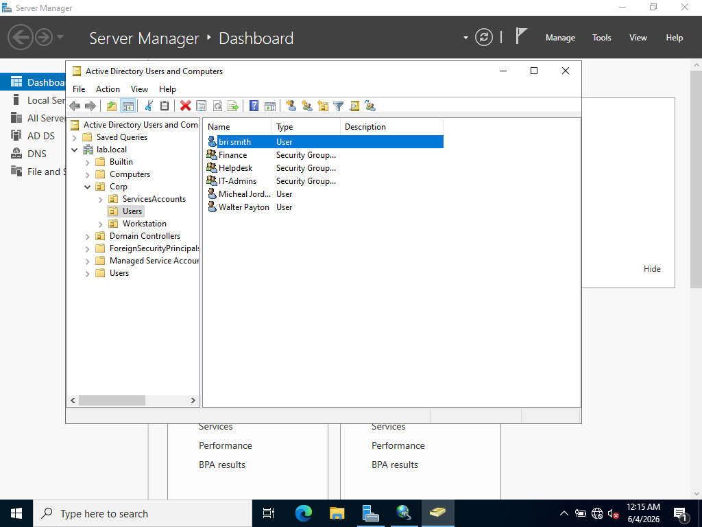
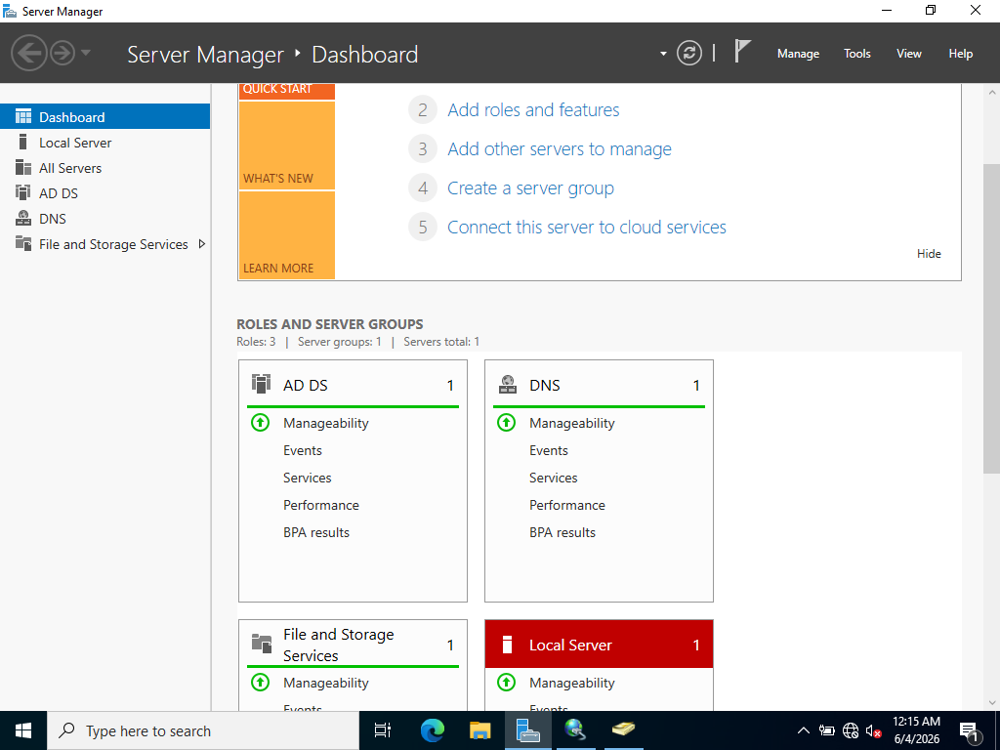
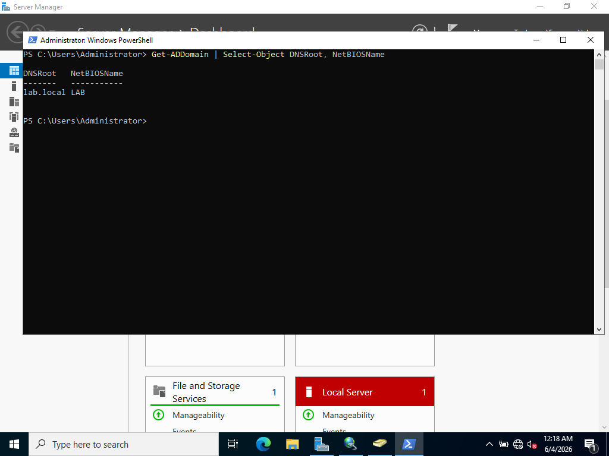
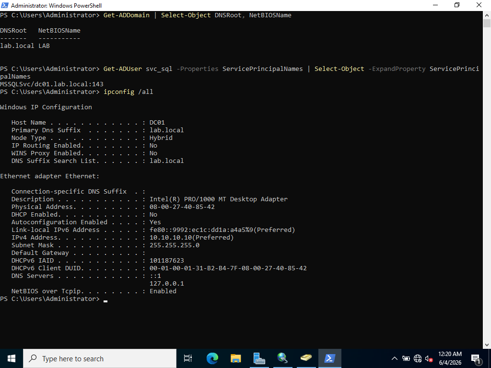
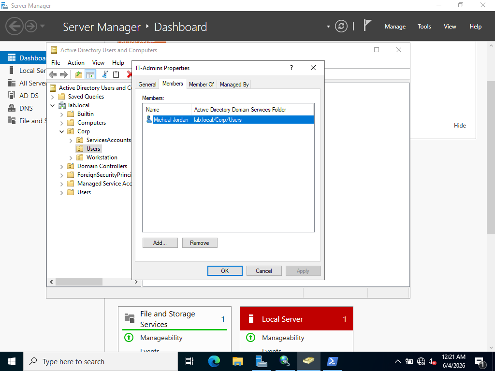
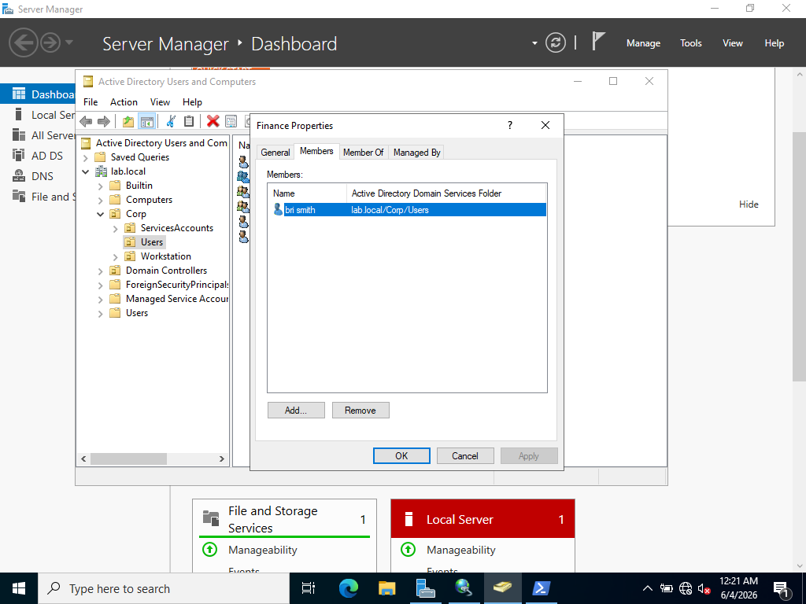
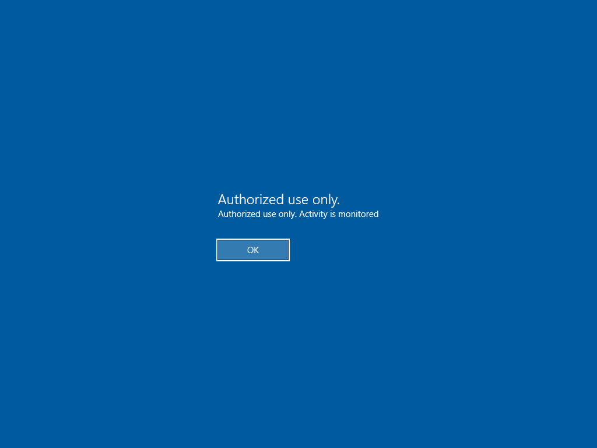

Flagship · Purple team · Phase 1 complete
Active Directory Purple-Team & SOC Lab
A self-built mini-enterprise running on a spare Windows laptop and an Apple Silicon Mac. I stand up an Active Directory domain, attack it from Kali, then catch the attack in Splunk. One lab, three skill areas I'm targeting for work: identity (IAM), detection (SOC), and offensive technique (purple team).
Maps to Security+ SY0-701 domains: access control and identity, attacks and indicators, and security operations and monitoring.
Architecture
| VM | Role | IP |
|---|---|---|
DC01 — Windows Server 2022 | Domain Controller, DNS for lab.local, Sysmon | 10.10.10.10 |
WS01 — Windows 10/11 | Domain-joined workstation, Sysmon, Splunk (SOC console) | 10.10.10.30 |
KALI — Kali Linux (UTM, Mac) | Attacker, only reachable during exercises | 10.10.10.20 |
- Domain traffic rides a sealed VirtualBox internal network; the bridged adapter stays disabled except during attack exercises
- SOC capability comes from Sysmon + Splunk Free inside the existing VMs — no extra SIEM VM needed on 16 GB of RAM
- Safety rule: credential and protocol attacks against my own VMs only; no live malware or real C2 on home topology
Phase 1 — Identity: stand up the domain (done)
- Promoted
DC01to Domain Controller for a new forest,lab.local - Built the OU tree (
Corp→ Users, Workstations, ServiceAccounts) with users and groups: IT-Admins, Helpdesk, Finance - Linked a logon-banner GPO to feel the IAM workflow end to end
- Planted the attack surface for Phase 3: a service account with an SPN and a deliberately weak password — the Kerberoasting target
Evidence — Phase 1

01 · Active Directory Users & Computers — OU tree and user accounts

02 · Server Manager — AD DS and DNS roles installed on DC01

03 · PowerShell Get-ADDomain — lab.local forest confirmed

04 · svc_sql service account with SPN set — the planted Kerberoast target

05 · IT-Admins group membership
06 · Helpdesk group membership

07 · Finance group membership

08 · Logon-banner GPO linked and applied
Next phases
- Phase 2 — Detection: Sysmon on both Windows VMs, telemetry centralized in Splunk
- Phase 3 — Offense: Kerberoasting and a password spray from Kali, end to end
- Phase 4 — Purple: write the Splunk detections that catch both attacks, document the fix
Prototype page. The real build gets a full case-study page in the same format as the other write-ups, with the complete README content.